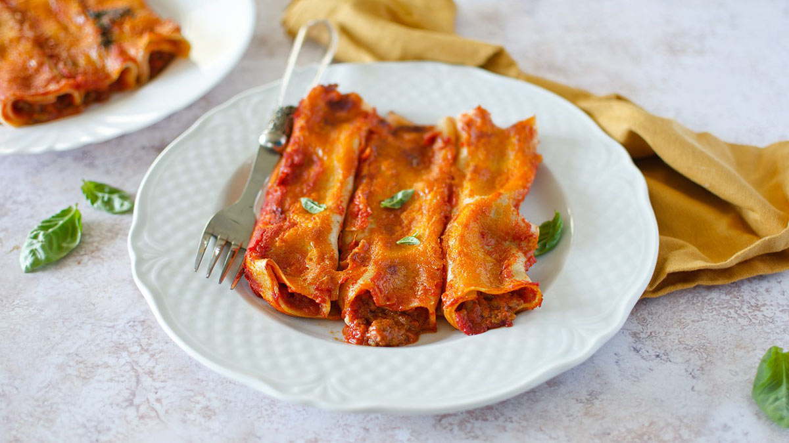

Cannelloni
- Difficulty: Easy
- Preparation: 90 min
- Cooking: 50 min
- Serves for: 4 people
- Cost: Low
by Bruno Barbieri
These succulent pasta cylinders filled with a mix of meat and sausage, topped with béchamel sauce and tomato are a typical first course from Emilia. Rich and tasty, cannelloni are perfect for special occasions.
Ingredients
For the pasta
- 100 g flour 00
- 1 eggs medium
For the filling
- 200 g sausage
- 300 g minced beef
- 80 g onions
- 60 g celery
- 80 g carrots
- 50 g red wine
- 300 g tomato puree
Preparation and Baking
- Step
To prepare the cannelloni start with the seasoning. Clean and finely chop celery, carrot and onion. Then remove the sausage casing and chop with a knife. At this point move to the stove. In the hot saucepan with a drizzle of oil, pour in the sausage and let it brown thoroughly. When nicely browned add the chopped vegetables and stir, let stew for 5-6 minutes. Add the ground beef, stir and turn up the heat. Let it brown unhurriedly. Deglaze with the red wine 6 and stir again.
- Step
As soon as the alcohol has evaporated, add the tomato puree. Stir to incorporate it and rinse the pot with a little water to collect the leftover; then season with salt. Cover with a lid with a small vent and cook for one hour. Check from time to time. Meanwhile, make the egg pasta. Pour the flour inside a bowl and add the lightly beaten egg. Knead the dough with your hands until the ingredients are blended. Then transfer the dough to a pastry board and knead it again until it is smooth and homogeneous, firm and elastic, and given a spherical shape.
- Step
Prepare the béchamel sauce. First you need to heat the milk, flavored with nutmeg and salt. In another pan pour the butter and let it melt completely. At this point add the sifted flour and stir quickly. After a couple of minutes you will get a hazelnut-colored roux, remove from the heat a moment and pour in the milk, now hot. Stir continuously and wait until the béchamel is thick but fluid, about 4-5 minutes. Transfer the béchamel to a glass bowl and cover with plastic wrap. Once cold, if it is too thick, thicken it with a little milk.
- Step
Take your egg dough loaf that will have rested and reached the right elasticity and divide it in two. Roll out each part of the dough with the sheeter machine starting from the widest width to the narrowest. You will get a sheet of dough about 2 mm thick. In the absence of the dough rolling machine, you can roll out the sheet by hand, using a lightly floured rolling pin. Cut out 8 rectangles 10X14 cm 21. Once you have obtained your pasta rectangles blanch them one at a time for about 1 minute in boiling, lightly salted water. Drain them and transfer them to a tray where you will have placed a kitchen cloth, it is important to roll out the various rectangles perfectly without overlapping them, if you prefer you can pass them in cold water to stop them cooking. In the meantime the meat sauce will be ready and cooled, keep 250 g of it aside.
- Step
To the remaining ragout add grated cheese and season with pepper. Mix and place back in the refrigerator. Take a rectangle of dough and stuff it with the meat sauce on one side only, leaving a couple of cm from the edge on the wide side. Then roll the pastry on itself. Seal the dough to form cylinders. Spread a couple of tablespoons of béchamel sauce on the bottom of a 20x30 cm 31 baking dish. Place your cannelloni. Top them with the remaining béchamel sauce and the 250 g of ragu sauce kept aside, 15 g of grated cheese 32 and bake in a static oven preheated to 200° for 15 minutes on the medium shelf and 5 minutes at 240°, in grill mode, on the shelf just higher, until you get a golden crust. All that remains is for you to serve your cannelloni still warm 33!